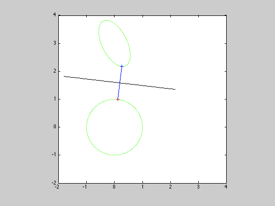

Separating ellipsoids in 2D
n = 2;
A = eye(n);
b = zeros(n,1);
C = [2 1; -.5 1];
d = [-3; -3];
cvx_begin
variables x(n) y(n) w(n)
dual variables lam muu z
minimize ( norm(w,2) )
subject to
lam: square_pos( norm (A*x + b) ) <= 1;
muu: square_pos( norm (C*y + d) ) <= 1;
z: x - y == w;
cvx_end
t = (x + y)/2;
p=z;
p(1) = z(2); p(2) = -z(1);
c = linspace(-2,2,100);
q = repmat(t,1,length(c)) +p*c;
nopts = 1000;
angles = linspace(0,2*pi,nopts);
[u,v] = meshgrid([-2:0.01:4]);
z1 = (A(1,1)*u + A(1,2)*v + b(1)).^2 + (A(2,1)*u + A(2,2)*v + b(2)).^2;
z2 = (C(1,1)*u + C(1,2)*v + d(1)).^2 + (C(2,1)*u + C(2,2)*v + d(2)).^2;
contour(u,v,z1,[1 1]);
hold on;
contour(u,v,z2,[1 1]);
axis square
plot(x(1),x(2),'r+');
plot(y(1),y(2),'b+');
line([x(1) y(1)],[x(2) y(2)]);
plot(q(1,:),q(2,:),'k');
Calling SeDuMi: 15 variables (0 free), 8 equality constraints
------------------------------------------------------------------------
SeDuMi 1.1 by AdvOL, 2005 and Jos F. Sturm, 1998, 2001-2003.
Alg = 2: xz-corrector, Adaptive Step-Differentiation, theta = 0.250, beta = 0.500
eqs m = 8, order n = 11, dim = 18, blocks = 6
nnz(A) = 16 + 0, nnz(ADA) = 30, nnz(L) = 19
it : b*y gap delta rate t/tP* t/tD* feas cg cg prec
0 : 4.24E+000 0.000
1 : 7.77E-002 1.29E+000 0.000 0.3050 0.9000 0.9000 2.16 1 1 1.6E+000
2 : 1.14E+000 1.15E-001 0.000 0.0893 0.9900 0.9900 1.14 1 1 1.3E-001
3 : 1.19E+000 6.80E-004 0.000 0.0059 0.9990 0.9990 1.07 1 1 6.1E-004
4 : 1.19E+000 3.01E-006 0.193 0.0044 0.9990 0.9990 1.00 1 1 2.7E-006
5 : 1.19E+000 1.56E-007 0.145 0.0517 0.9900 0.9900 1.00 1 1 1.4E-007
6 : 1.19E+000 2.74E-008 0.000 0.1760 0.9000 0.9134 1.00 1 1 3.4E-008
7 : 1.19E+000 4.02E-009 0.000 0.1465 0.9000 0.9131 1.00 2 2 6.5E-009
iter seconds digits c*x b*y
7 0.1 8.3 1.1924413568e+000 1.1924413514e+000
|Ax-b| = 1.2e-008, [Ay-c]_+ = 2.5E-010, |x|= 3.9e+000, |y|= 1.9e+000
Detailed timing (sec)
Pre IPM Post
3.004E-002 1.302E-001 0.000E+000
Max-norms: ||b||=3, ||c|| = 1,
Cholesky |add|=0, |skip| = 0, ||L.L|| = 1.
------------------------------------------------------------------------
Status (cvx_status): Solved
Optimal value (cvx_optval): 1.19244
